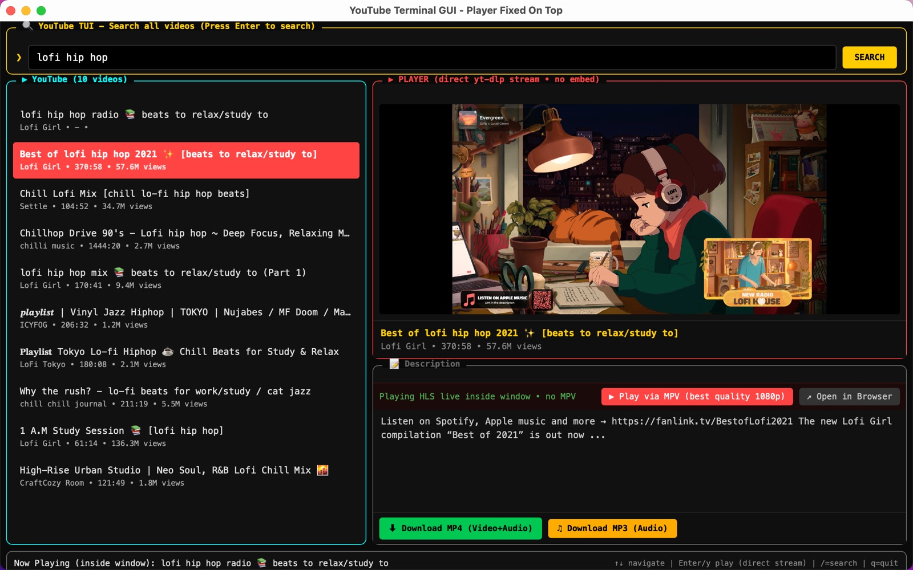

Search instantly
Find videos across YouTube with a lightweight, keyboard-friendly search flow.
v0.1.0 is available
Search, play, and download YouTube videos from a fast terminal-style desktop app. yt-dlp, ffmpeg, and ffprobe are bundled, so there is nothing extra to install — and no ads, ever.

Measured on this machine: the app runs at about 140 MB of RAM, while a single browser tab with YouTube open sits at about 1.6 GB — and it stays ad-free.
Built for focus
A compact interface for discovering videos, watching them in the same window, and saving a copy when you need it. No ad breaks, no pop-ups, no sign-in wall — the video starts when you press Enter.
Find videos across YouTube with a lightweight, keyboard-friendly search flow.
Stream progressive MP4 or live HLS directly in the app, with no iframe embeds.
Bundled ffmpeg merges the best video and audio locally for high-quality playback.
Download MP4 video or MP3 audio with clear progress and status feedback.
Get the installer
Every installer is self-contained and published in the v0.1.0 GitHub Release.
Universal · Intel + Apple Silicon
macOS 10.15 or later
Windows 10 / 11
NSIS setup packages
glibc 2.28 or later
Choose .deb for package-manager installs or AppImage for a portable launch.
For developers
Node.js 20+ and a stable Rust toolchain are the only build-machine requirements. End users only need the installer.